Spindle thresholds
Detection thresholds
dur/amp
Individual-level profiles
The above plots pool values from different individuals. To study between-person differences better, we'll generate topo-plots per-individual, for two metrics: spindle density and frequency. (Note that the following plots do not have standardized z-axes (heat/color) between different individuals.)
First, we'll look at slow spindle densities (top row: females F01 through F10; bottom row males M01 through M10):
ids <- unique( d$ID)
for (id in ids)
ltopo.heat(d$CH[d$ID==id & d$F==11], d$DENS[d$ID==id & d$F==11], sz=1.2, show.leg=F)
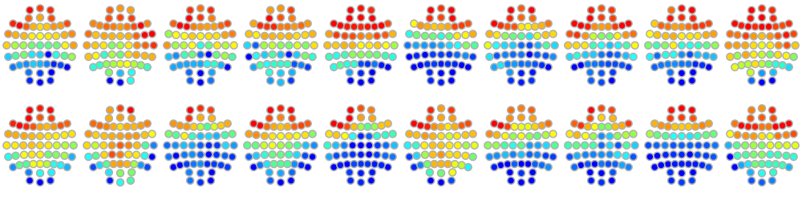
Next, fast spindle densities:
for (id in ids)
ltopo.heat(d$CH[d$ID==id & d$F==15], d$DENS[d$ID==id & d$F==15], sz=1.2, show.leg=F)
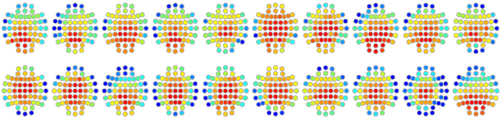
Althought there is some variability, all 20 individuals generally show qualitatively similar profiles (frontal slow spindles and central/parietal fast spindles).
Now we'll instead consider spindle frequency, first for slow spindles:
for (id in ids)
ltopo.heat(d$CH[d$ID==id & d$F==11], d$FRQ[d$ID==id & d$F==11], sz=1.2, show.leg=F)
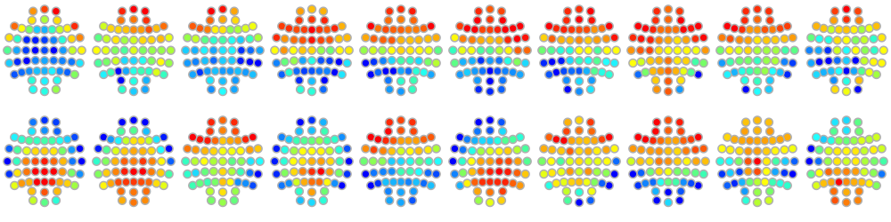
Finally, for fast spindle frequency:
for (id in ids)
ltopo.heat(d$CH[d$ID==id & d$F==15], d$FRQ[d$ID==id & d$F==15], sz=1.2, show.leg=F)
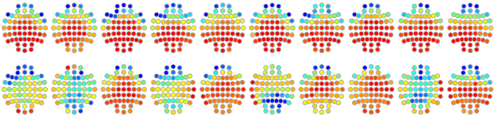
In contrast to the plots for spindle density, there is arguably a greater extent of diversity between individuals in terms of the topographies of spindle frequencies. We'll follow this up below, where we use a different visualization approach to look at the same data.
Instead of topo-plots, it can sometimes be convenient (especially in a small dataset) to plot values different, as it can sometimes be difficult to appreciate quantitative differences (within- and between-individuals) when looking at color-coded z-axes (although this likely reflects personal preference). In this context where most topographic effects are largely captured by a simple anterior-posterior gradient, we'll adopt the following approach.
First, we'll also force an ordering of channels, ensuring they are in
an anterior-posterior axis; following the general logic of this
section, we'll use the coordinates in
this clocs file to order the rows in data frame d and merge this
with d (linking by channel label CH) and then order the rows
(channels) of d by this new value N (within each individual):
clocs <- read.table( "work/data/aux/clocs", header=T, stringsAsFactors=F)
d$CH <- toupper( d$CH )
d <- merge( d , clocs[, c("CH","N") ] , by="CH" )
d <- d[ order( d$ID , d$N ) , ]
Second, we'll first add a male variable (based on the ID starting
with the character M in this instance) and make
a palette that identifies the females (red/pink)
and males (blues), with values ordered by individual, then by
channel. Note, the two shades of red (or blue) in the images below
reflect only odd-vs-even numbered individuals, i.e. purely
to visually delineate each individual:
d$male <- grepl("^M",d$ID)
pal <- c( rep( c( "red2" , "plum1" ) , each=57 , times = 5 ) ,
rep( c( "royalblue3" , "steelblue1" ) , each=57 ,times = 5 ) )
We can then define a simple plot function:
f1 <- function(v,ylim = range(d[,v]) ) {
par(mfcol=c(2,1), mar=c(0.5,5,0.5,0.5) )
plot( d[ d$F == 11 , v], col=pal, pch=18, xlab="" , ylab = paste("SS",v), ylim=ylim, xaxt='n')
plot( d[ d$F == 15 , v], col=pal, pch=20, xlab="" , ylab = paste("FS",v), ylim=ylim, xaxt='n' )
}
First, we'll apply it to spindle density:
f1("DENS")
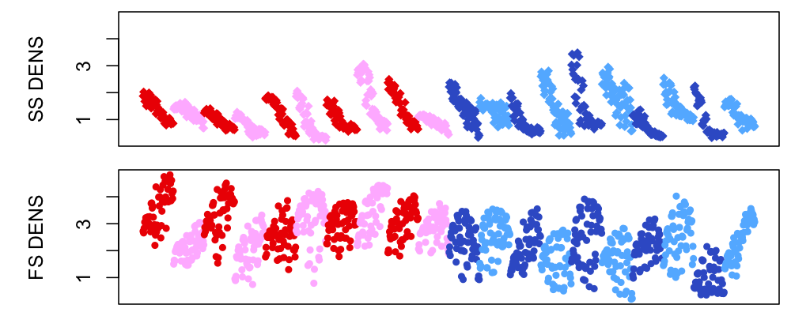
Broadly, we see roughly similar rates of spindles between individuals, although within each individual there are quite pronounced differences in spindle rate, that broadly follow the known topographical features for spindles (given we've ordered the channels for each individual in an anterior-to-posterior ordering). That is, as seen above, slow spindles (SS) are more frontal, fast spindles (FS) are more central/parietal. Given we've familiarized ourselves with this type of presentation, we can plot the remaining five metrics too.
f1("AMP")
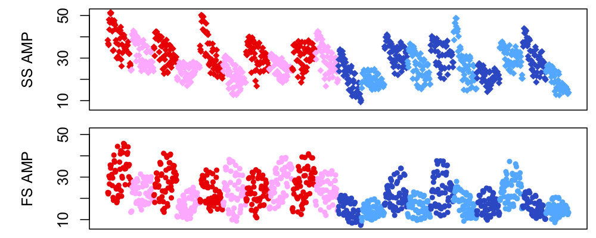
f1("DUR")
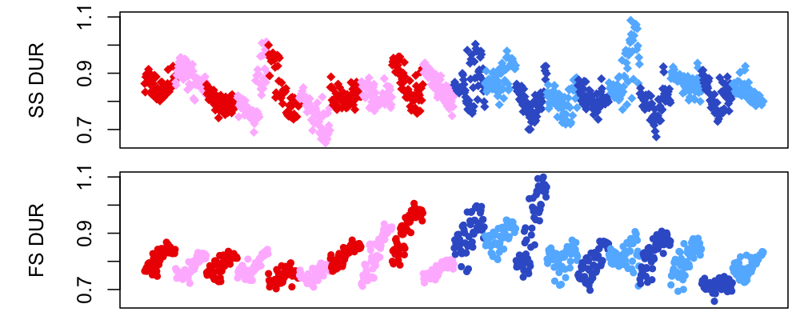
f1("NOSC")
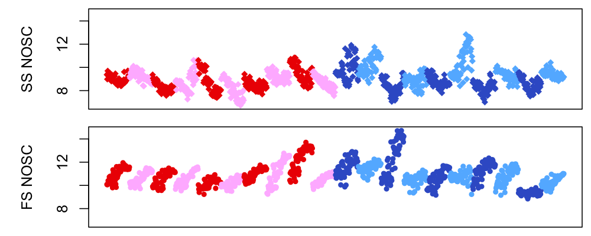
f1("FRQ")
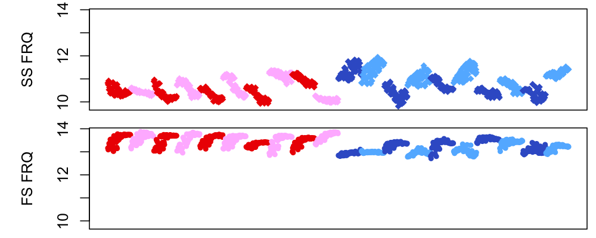
f1("CHIRP")
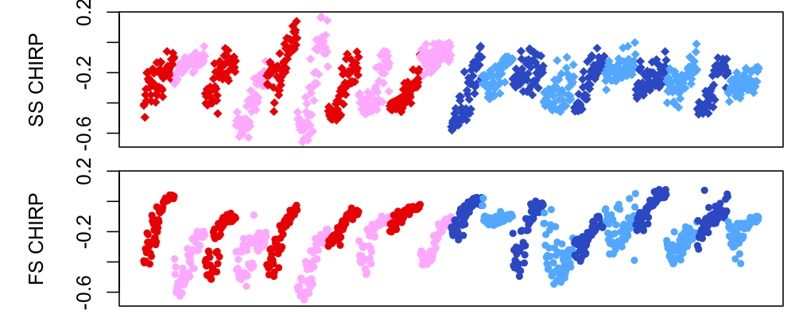
That is, overall, we see difference both between and
within individuals, with many metrics showing anterior-posterior
gradients. In particular, mean spindle frequency (of the spindles
detected given a fixed target frequency) shows the greatest
extent of variability, with some individuals effectively having
non-overlapping distributions. Here we plot the same values
without constraining the y-axes to be similar for fast and
slow spindles (i.e. by setting the second ylim argument to NULL):
f1("FRQ",NULL)
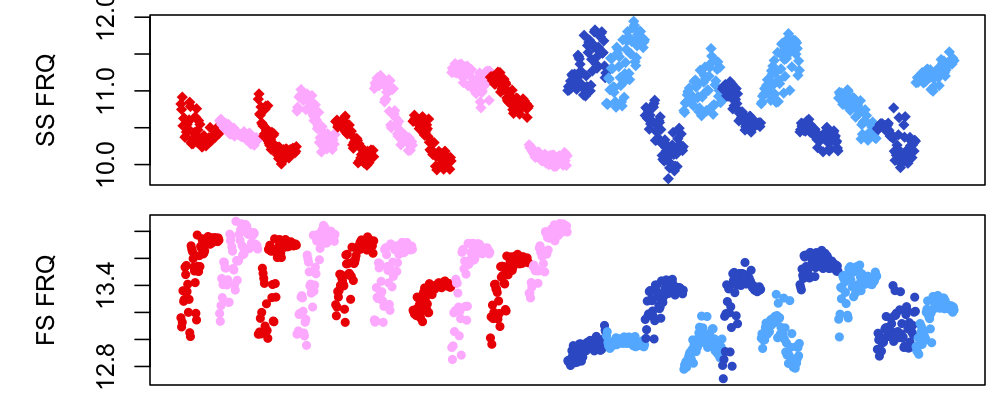
For example, the first two males (M01 and M02 as well as M04,
M06 and M10) have patterns of slow spindle frequency that are a)
higher than expected and b) track in a revesred posterior-to-anterior
direction, unlike that seen in most other individuals. In fact, the
gradients of spindle frequency in these males look closer to those seen
for fast spindles - which may be consistent with the generally higher
average frequency too. We'll return to these issues below.
Modal spindle frequency
As spindle activity is often evident as sigma-band "peaks" in the power spectra, it can be useful to review those too. Although we've used a one-size-fits-all approach above, people are known to vary in their modal spindle frequencies (among other spindle attributes), and so we'll plot individual-level spectra for this small dataset. Further, as spindles reflecting periodic (oscillatory) activity, we'll use the IRASA approach that attempts to separate our periodic activity from the background (1/f-style) aperiodic EEG.
Here we attempt to find the peak N2 sigma-range frequencies for each individual:
luna c.lst -o out/spectral-n2-all-chs.db \
-s ' FILTER bandpass=0.3,60 tw=0.3,5 ripple=0.01,0.01
MASK ifnot=N2 & RE
CHEP-MASK ep-th=3,3
CHEP epochs & RE
IRASA dB '
destrat out/spectral-n2-all-chs.db +IRASA -r F CH -v PER > o.1
Loading these outputs into R:
d <- read.table( "o.1" , header=T, stringsAsFactors=F)
To plot power spectra with channels colored with respect to the
anterior-posterior axis, we'll again attach the clocs information (with the N variable
reflecting this) and make a palette for channels:
clocs <- read.table( "work/data/aux/clocs" , header=T, stringsAsFactors=F)
clocs$CH <- toupper( clocs$CH )
d$CH <- toupper( d$CH )
d <- merge( d , clocs[ , c("CH","N") ] , by="CH" )
d <- d[ order(d$ID,d$N,d$F) , ]
pal <- lturbo(nchs)
For reference, these are the colors assigned (in pal) to each channel, as will be used in the IRASA power spectra below:
ltopo.heat( clocs$CH[ clocs$CH %in% d$CH ] ,
clocs$N[ clocs$CH %in% d$CH ] , sz=1.5 )
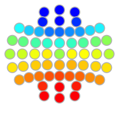
We'll make one plot for each individual, plotting frequency (fx on the x-axis)
against the periodic component of the power spectrum from IRASA (PER on the y-axis).
ids <- unique( d$ID )
fx <- unique( d$F )
chs <- unique( d$CH )
nchs <- length( chs )
These are the plots for females (F01 through F05 in the first column, F06 through F10
in the second column). For reference, we've added a vertical line in the middle of the sigma range, at 13.5 Hz:
par(mfcol=c(5,2) , mar=c(3,1,1,0.5) )
for (id in ids[1:10] ) {
xx <- d[ d$ID == id , ]
plot( fx , fx , type="n" , xlab = "Frequency (Hz)" , ylab = "Power" , ylim = range( d$PER ) , main = id )
for (ch in 1:nchs)
lines( fx , xx$PER[ xx$CH == chs[ch] ] , col = pal[ch] , lwd=1 )
abline(v=c(13.5))
}
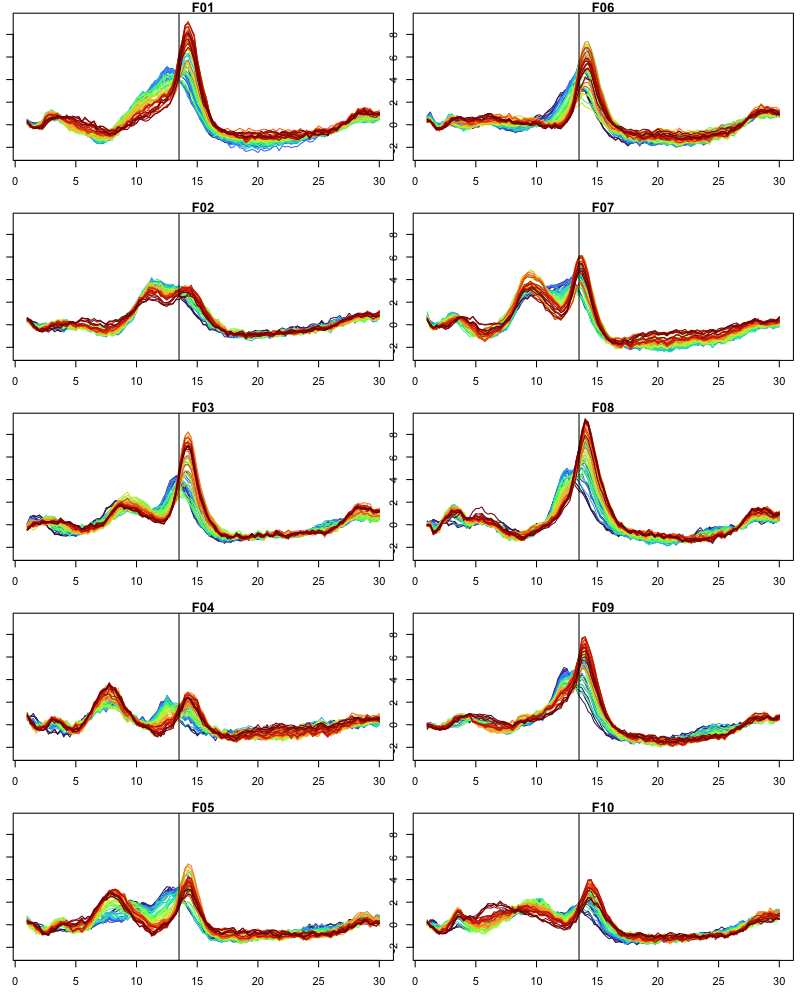
Next, here are the equivalent plots for the 10 males:
par(mfcol=c(5,2) , mar=c(3,1,1,0.5) )
for (id in ids[11:20] ) {
xx <- d[ d$ID == id , ]
plot( fx , fx , type="n" , xlab = "Frequency (Hz)" , ylab = "Power" , ylim = range( d$PER ) , main = id )
for (ch in 1:nchs)
lines( fx , xx$PER[ xx$CH == chs[ch] ] , col = pal[ch] , lwd=1 )
abline(v=c(13.5))
}
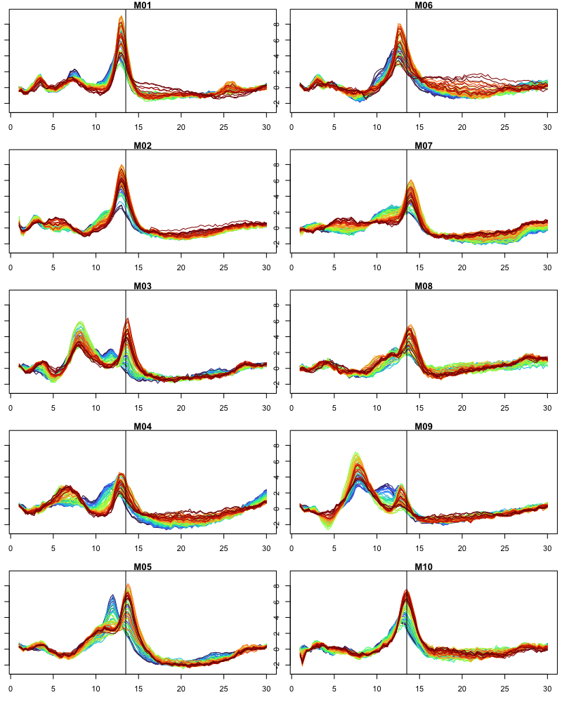
There are a number of things one can note from the above plots
-
M01,M02and some other males clearly have sigma peaks that are below the mid-sigma value (13.5 Hz), whereas most feamles have parietal (i.e. orange/red, fast spindle) peaks that are at or above 13.5 Hz -
whereas some individuals have a clear secondary peak (e.g.
M05) are slower sigma frequencies for frontal (blue/green) channels , others do not; for some individuals, the frontal peak appears to be largely overlapping the parietal peaks -
some individuals also have pronounced peaks of N2 oscillatory activity (as estimated by IRASA) in the theta or low alpha (6-8 Hz) range (e.g.
F04,M03andM09), whereas most people do not; these theta peaks typically involve both frontal and parietal channels; they also appear independent of the "frontal slow sigma" peaks in these indivdiduals, when they do occur.
Based on these types of observations, investigators have been
motivated to fine-tuned spindle detection parameters for specific
individuals. There are some simple approaches to this that can be
easily applied in Luna (e.g. peak finding for select channels from
these types of power spectra, and then setting fc options to
individual-specific values, attached via the vars special option).
We note here that it can still be challenging if there are not
distinct peaks or if frontal/parietal peaks have essentially
overlapping spectra. It is beyond the scope of this walkthrough to
consider these approaches, but we'll address these issues and
alternate approachs in future work.
Detection parameters
To more concretely illustrate the behavior of the one-size-fits-all
detector implemented here, it is useful to use the --cwt
command,
which produces analytic output on the properties of a continuous
wavelet transform (CWT) given the design parameters.
By default, the SPINDLES command uses a wavelet with 7 cycles (although there are alternate
ways to define wavelets that are also supported.
We specify the center frequency, number of cycles and also sample rate (fs) as follows:
echo "fc=11 cycles=7 fs=200" | luna --cwt -o out.db
echo "fc=11 cycles=12 fs=200" | luna --cwt -a out.db
echo "fc=11 cycles=18 fs=200" | luna --cwt -a out.db
echo "fc=15 cycles=7 fs=200" | luna --cwt -a out.db
echo "fc=15 cycles=12 fs=200" | luna --cwt -a out.db
echo "fc=15 cycles=18 fs=200" | luna --cwt -a out.db
Looking at the output in R:
library(luna)
k <- ldb("out.db")
k$CWT_DESIGN$PARAM
Here we see summaries for these six scenarios: either for slow or fast spindles, with increasing number of cycles (which corresponds to a tighter delineation in the frequency domain, at the expense of blurring in the time domain):
PARAM FWHM_F FWHM_LWR FWHM_UPR
11_7_200 3.516484 9.230769 12.74725
11_12_200 2.197802 9.890110 12.08791
11_18_200 1.318681 10.329670 11.64835
15_7_200 4.804805 12.612613 17.41742
15_12_200 3.003003 13.513514 16.51652
15_18_200 1.801802 14.114114 15.91592
The FWHM_F gives a sense of the span (full-width half-max) of each wavelet in terms of the frequencies
to which the wavelet is sensitive. It is also possible to plot these response curves more directly:
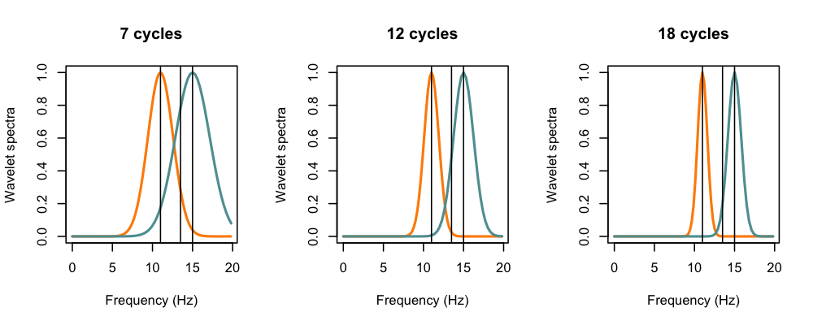
The defaults of 11 Hz and 15 Hz with 7 cycles was selected to a) broadly span the sigma band with approximately even total coverage (i.e. the two curves meet at around the 0.5 value), and b) still preserve the distinction between "slower" and "faster" spindles, even though, as we've seen, spindles do not truely come in two completely distinct frequency classes, and even though fast spindles typically have modal frequencies below 15 Hz.
For fine-grained analyses of spindle classes and the relationships between a) fast and slow spindles, and b) the different spindle metrics, at both the per individual-level and per-spindle level, if nothing else, it will be important to consider the impact of these reified parameter settings, as noted above. For the purposes of this walkthrough, however, we'll stick to the spindle metrics as derived above.